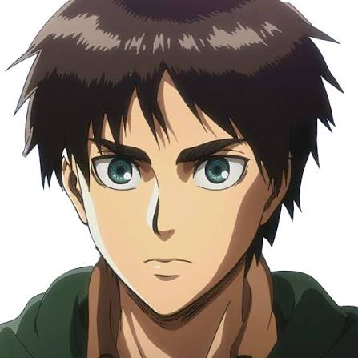

About: Eren Yeager (Japanese: エレン・イェーガー, Hepburn: Eren Yēgā) is the protagonist of the Attack on Titan manga series created by Hajime Isayama. Eren is a teenager who swears revenge on enormous man-eating humanoid creatures known as Titans, who have forced what remains of the human race to live in walled-off cities and devoured his mother while destroying his hometown in the Shiganshina district of Wall Maria. In order to defeat the Titans, Eren enlists in the Military and joins the Survey Corps – an elite group of soldiers who fight Titans outside the walls, whilst studying the physiology of Titans so as to better understand and defend themselves against these creatures. As the story progresses, Eren gains the power of becoming a Titan later identified as "Attack Titan" (進撃の巨人, Shingeki no Kyojin).
done by ASHWARD M SEKAR